This document explains how Nexora is structured, how a shopper and an administrator use it, and how the React, Node.js, Express, and MongoDB layers work together.
Nexora is a full-stack online-store project. It gives customers a simple way to discover products, build a cart, place an order, and track that order. It also provides an administrator area for product and order management.
Search, category filtering, sorting, product detail, quantity controls, checkout, profile access, and order history are combined into one responsive storefront.
The administrator experience supports adding or removing products, reviewing orders, and moving orders through operational statuses.
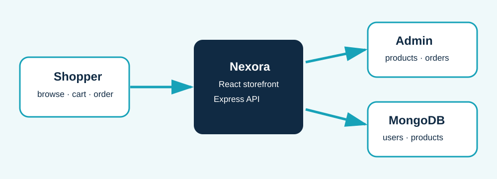
Beginner note: “Full stack” means the visible website (frontend) and the server/database work are both included in the same project.
Online shopping involves more than displaying product cards. A useful store must help people find suitable products, maintain accurate quantities, present a clear checkout total, and give staff a way to manage the catalogue. Nexora models these essentials in an approachable learning project.
| Stakeholder | Need | Nexora response |
|---|---|---|
| Shopper | Fast, clear purchase journey | Filters, product pages, cart and order list |
| Store administrator | Control products and order progress | Admin Studio and status controls |
| Developer | Easy-to-follow architecture | Routes, controllers, models, and reusable React UI |
Boundary: payment-gateway integration and a persisted order model are future improvements, not completed production features in the current repository.
Nexora has two connected experiences. The shop is designed for everyday customers. The “Admin Studio” is a protected view intended for people who maintain inventory and monitor transactions.
The home page loads products from the API when available and merges them with saved or demonstration products for a resilient presentation. Visitors can search, filter, sort, view, and add products to the cart.
An eligible role is sent to a dashboard-like profile screen. It includes product creation, product removal, simple inventory listing, totals, and the ability to update order status.
Features are grouped below by the problem they solve. This makes it easier for a beginner to relate a screen action to the system behavior behind it.
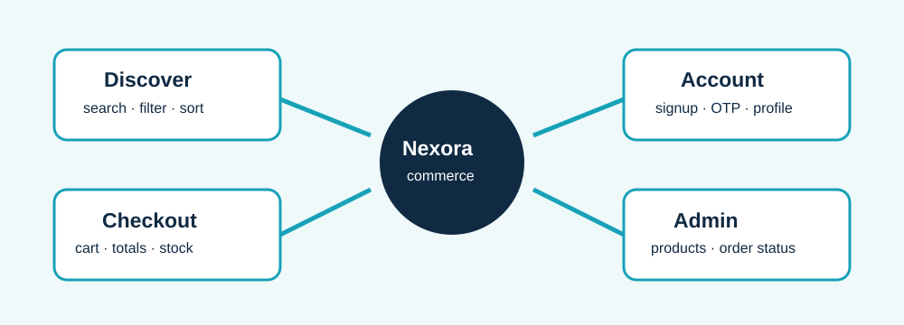
Search, category filtering, featured sorting, low-to-high price sorting, high-to-low price sorting, cards, and individual product pages help a shopper narrow a selection.
Quantity buttons protect against exceeding stock. Checkout calculates subtotal, delivery, and total, creates an order record in browser storage, and deducts available stock.
Signup hashes passwords on the server. Email OTP verification is required before server login. Role-aware navigation and RequireAdmin protect the administration route.
Admins can create or delete products, review stock, view simple performance metrics, and update order status from Processing to Delivered or Cancelled.
| Layer | Technology | Why it is used |
|---|---|---|
| Frontend | React 19, Vite, React Router | Builds components quickly and maps URLs to screens without full-page reloads. |
| HTTP client | Axios | Provides a central API client with a configurable base URL and timeout. |
| Notifications | React Toastify | Shows feedback for login, cart, verification, and product actions. |
| Backend | Node.js and Express 5 | Receives browser requests and connects route paths to controller functions. |
| Database | MongoDB with Mongoose | Stores document-style records for users, products, categories, and carts. |
| Security/email | bcryptjs, Nodemailer | Hashes passwords and sends email verification one-time passwords. |
JavaScript is used across the browser and server, which lowers the learning curve. Vite provides fast local development, while Express keeps API endpoints readable.
Dependency: a reusable package. API: a contract for browser/server communication. Model: a Mongoose description of data fields.
The architecture separates the user interface from business/data code. A browser action calls an API endpoint. Express chooses a controller, and the controller reads or writes a Mongoose model in MongoDB.
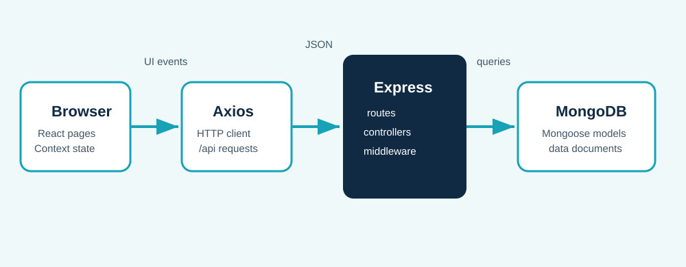
React pages collect user input and render data. UserContextProvider owns cross-screen client state for a user, cart, orders, and stock levels.
The server exposes routes under /api. It uses JSON parsing, CORS, and request logging before it hands a request to a route module.
Separation of concerns: the screen does not contain database queries. Keeping routing, controller logic, and schemas separate makes changes safer and easier to locate.
| URL | Screen | Purpose |
|---|---|---|
| / | Home | Catalogue, search, filters, product cards |
| /product/:id | SingleProduct | Product detail and add-to-cart action |
| /cart · /orders | Cart · Order | Checkout and purchase history |
| /login · /signup · /verify-email | Account screens | Access and email verification |
| /admin | Protected Profile mode | Admin Studio only for admin role |
Beginner note: a route is an address. On the frontend it decides which page is shown; on the backend it decides which operation runs.
The primary flow focuses on minimizing the distance between discovering a product and placing an order. Feedback toasts and clear navigation reduce uncertainty at each decision.
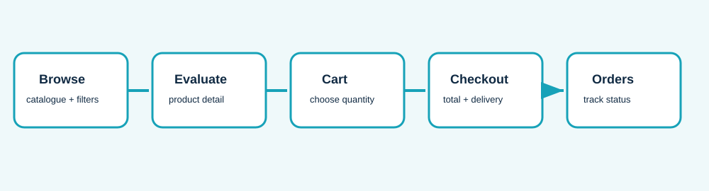
The Home page is the discovery hub. It tries to load up to 24 API products, then uses local and demo data when necessary. Duplicate products are removed before the grid is displayed.
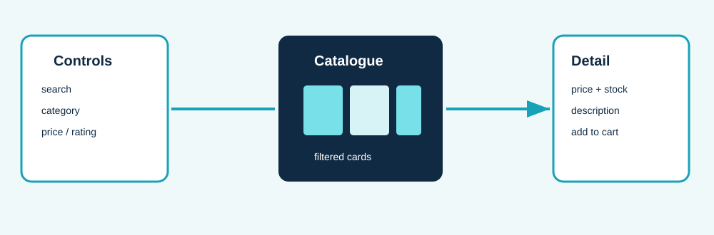
Search checks a product title. Category values are derived from current products. The sorting selector compares price or rating so results remain understandable and immediate.
The detail route uses an ID from the URL. It can use state passed from the product card, request a missing product from the API, or show a demo fallback.
Stock visibility: both the product card and detail screen call getProductStock, keeping the displayed availability aligned with cart/checkout state.
The cart is held in the shared React context and persisted to browser storage. Each item includes an ID, title, price, image, category, stock value, and chosen quantity.
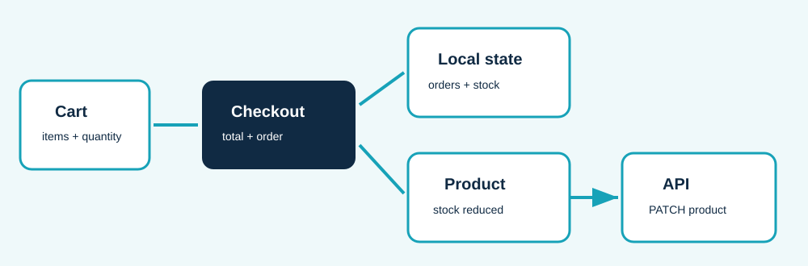
| Step | Implementation behavior |
|---|---|
| Quantity increase | Clamped to the current available stock; users cannot select more than is available. |
| Summary | Subtotal is item price × quantity. Delivery is free over Rs. 2,000 or when the cart is empty; otherwise it is Rs. 99. |
| Order creation | An ID, date, status “Processing”, customer, items, products, and total are created. |
| Stock update | New stock is calculated with a minimum of zero, saved locally, and patched to the API for MongoDB-shaped IDs. |
Nexora supports registration, login, role selection, and email verification. The backend hashes the submitted password using bcrypt before it creates the user record. It does not return that password in the successful login response.
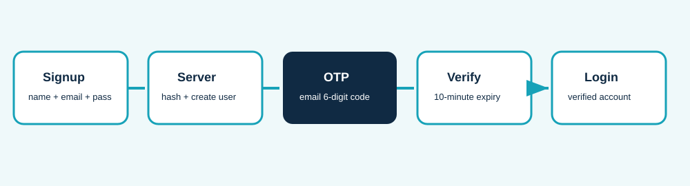
The server creates a six-digit OTP, temporarily keeps it in an in-memory map for ten minutes, sends it through configured SMTP, and marks verified: true when the correct code returns.
The client saves a local account record, requests an OTP, and sends the code to the verification endpoint. Local storage supports the learning/demo experience when display state must survive a refresh.
Production consideration: OTP storage should move from server memory to a shared database/cache and rate limiting should be added before a multi-server deployment.
Administrators use the same application but have a higher-privilege role. The RequireAdmin component prevents a non-admin user from opening the administration route.
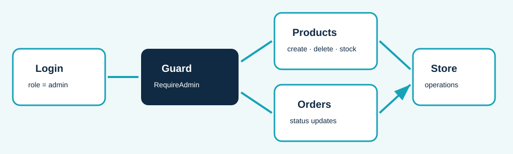
The admin form collects title, price, category, image URL, and description. It posts to the product creation API, then saves a local copy for UI continuity if the server is unavailable.
Admins can see order number, customer, date, status, and total. They can move an order through Processing, Packed, Shipped, Delivered, or Cancelled in the current client-state implementation.
Access model: the signup screen uses an invite-code check for the demo. A production system should enforce authorisation on every protected backend endpoint, not just in the browser.
The React client is divided into route pages, reusable components, an API helper, storage helpers, and a shared context provider. This avoids passing the cart or user through many nested components.
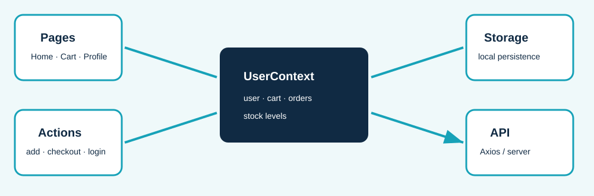
| Part | Role in the application |
|---|---|
| App.jsx | Defines routes, shared header/footer, admin protection, and notifications. |
| UserContextProvider | Holds user, cart, orders, stock levels, and actions such as checkout. |
| authStorage.js | Reads and writes browser data for accounts, verification, local products, and stock. |
| ApiInstance.js | Creates one Axios client with an environment-configurable API base URL. |
The Express server mounts a single router at /api. That router groups endpoints by domain, which helps a developer find the right location for a new feature.
| Module | Base path | Examples |
|---|---|---|
| User | /api/user | register, login, send-verification-otp, verify-email-otp, profile |
| Product | /api/product | create, getallproducts, getoneproduct/:id, update-product/:id, delete-product/:id |
| Category | /api/category | create, list, update, delete category records |
| Cart | /api/cart | Route group is present and ready for future persistent cart endpoints |
| Admin | /api/admin | Route group is present for future server-side admin operations |
Controllers read request input, call a model method such as find or findByIdAndUpdate, and send a JSON response with a status code.
body-parser.json() reads JSON bodies, cors() allows browser cross-origin calls, and morgan("dev") logs requests in development.
Mongoose models define the fields that MongoDB documents are expected to contain. The project includes models for users, products, categories, carts, and admins.
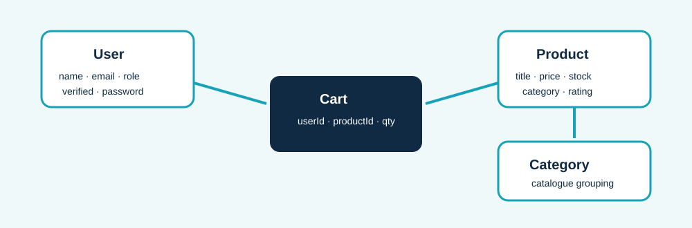
| Model | Important fields | Purpose |
|---|---|---|
| User | name, email, password, role, verified, timestamps | Account identity and email-verification state |
| Product | title, price, description, image, category, stock, rating | Catalogue items and availability |
| Cart | userId, productId, qty, timestamps | Schema foundation for a future database-backed cart |
| Category | Name-related category data | Organises the product catalogue |
Current design note: browser local storage currently owns the active cart and order history. The server-side Cart model is present but its route has not been implemented yet.
The repository is split into Nexora-Frontend and Nexora-Backend. Each has its own package manifest and development command.
PORT, MONGODB_URLSMTP_HOST, SMTP_PORTSMTP_USER, SMTP_PASS, SMTP_FROMVITE_API_URLnpm install..env with database and SMTP settings.npm run dev; it serves API routes on port 8081 unless overridden.npm run dev; configure VITE_API_URL if it should call a different API.npm run build in the frontend before production sharing.The project already includes several good building blocks: password hashing, verified-email gating, protected client routing, stock limits, API timeouts, and user-facing error messages. A production release needs additional controls.
| Area | Current evidence | Recommended next step |
|---|---|---|
| Passwords | bcrypt hashes registered passwords | Add password rules, reset flow, and secure session/JWT handling. |
| Authorisation | Admin route protected in React | Validate roles and tokens in Express before every protected data mutation. |
| OTP | Six-digit code, 10-minute expiry, SMTP delivery | Persist codes securely, add rate limits, and avoid in-memory-only storage. |
| Orders | Client-side order list and status updates | Create an Order model and transactional stock/order endpoint. |
| Testing | Build and lint scripts on the client | Add unit, integration, and end-to-end checkout tests. |
Testing priority: start with checkout stock calculations, login/verification failures, API product CRUD, and the admin route guard. These flows carry the highest risk of confusing users or incorrect data.
Nexora is a strong demonstration of a modern commerce workflow. The following phased plan turns its learning-oriented client state and API foundations into a more production-ready platform.
Persist transactions.
Create Order endpoints and connect the Cart model. Move checkout and status changes from browser-only state to server-controlled records.
Harden access.
Introduce JWT/session auth, backend role middleware, rate limits, validation, and secure OTP persistence.
Scale experience.
Add payment integration, image uploads, pagination, advanced filters, analytics, and automated tests.
Persisting orders first protects business history and makes stock changes auditable. Server-side access control comes next because frontend-only protection can be bypassed by direct API calls. After these foundations are reliable, product improvements such as payments and richer discovery become safer to add.
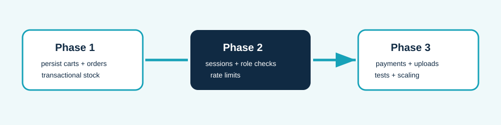
Nexora successfully brings together a polished e-commerce interface and a clean backend foundation. Its strongest learning value is the visible link between a user action—such as “Add to cart” or “Verify email”—and the React state, API, controller, and database work that support it.
| Need to understand | Start with |
|---|---|
| Application routes | Nexora-Frontend/src/App.jsx |
| Cart and stock rules | Nexora-Frontend/src/context/user/UserContextProvider.jsx |
| API endpoints | Nexora-Backend/routes/index.js and feature route files |
| Server behavior | Nexora-Backend/index.js and controllers/ |
| Data shape | Nexora-Backend/models/ |
Editable deliverables: this HTML source can be edited in Word or a browser before re-exporting. The accompanying DOCX is the recommended master copy; the PDF is the submission-ready version.